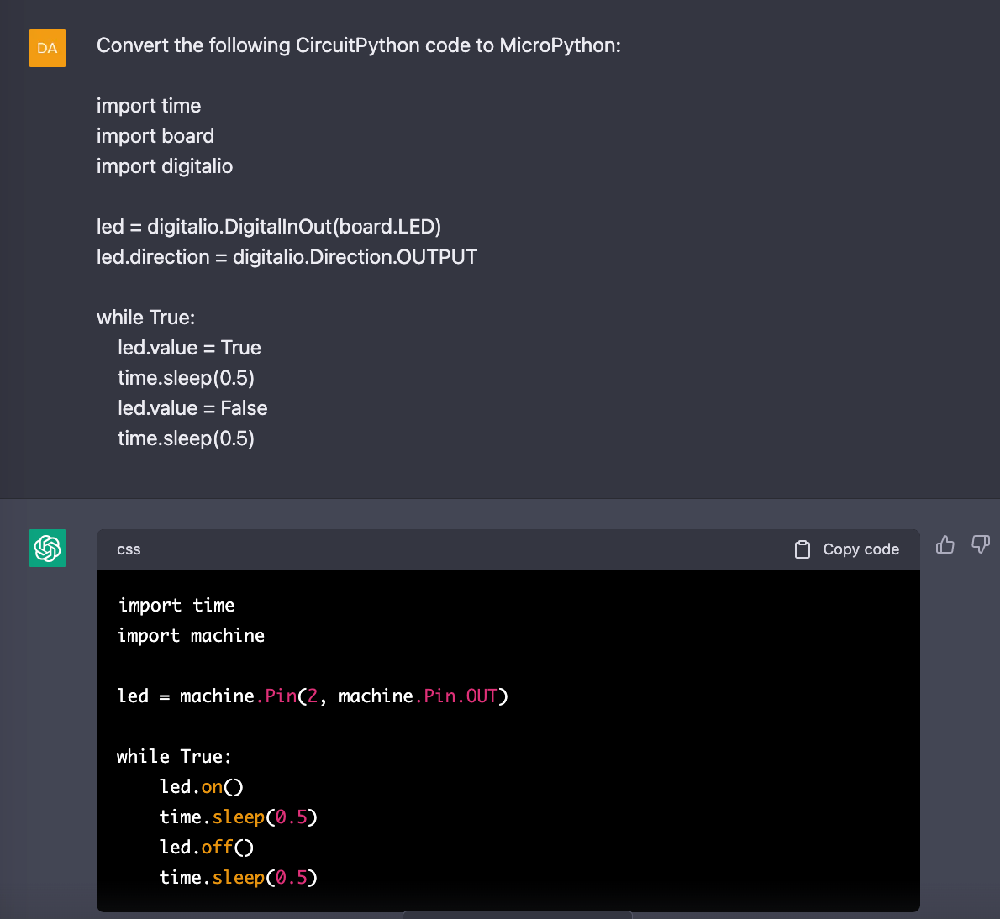

Converting CircuitPython to MicroPython
MicroPython was created in by Australian programmer Damian George in May of 2014. Although Adafruit originally supported MicroPython, in July 2017 Adafruit created a fork of MicroPython and called it CircuitPython. We can only speculate why this decisive action was taken, but the result is it divided the community into two incompatible branches and it doubled the amount of work needed to be done to introduce a new device to the Python community. Unfortunately, the consequence is that many programs written in CircuitPython are difficult to port to MicroPython.
Today, according to Google Trends, MicroPython is still four more popular than CircuitPython when we look at worldwide web search comparisons. However, in the US, the popularity is more equal. Although the claim was that CircuitPython was done for "simplicity" there is little evidence that CircuitPython programs are smaller or easier to maintain than MicroPython.
The one thing is clear, CircuitPython has lots of drivers for unusual hardware devices. If you find a driver you need in MicroPython you will need to convert it to MicroPython. This is usually done manually on a line-by-line basis.
Setting up a CircuitPython Virtual Environment
Because MicroPython and CircuitPython are incompatible, it is important that you don't intermix your Python libraries.
Here is how we setup a virtual environment for CircuitPython using Conda.
1 2 | |
Installing the SSD1306 CircuitPython Library
1 | |
1 | |
Note
ERROR: Could not find a version that satisfies the requirement adafruit-circuitpython-displayio-ssd1306 ERROR: No matching distribution found for adafruit-circuitpython-displayio-ssd1306
1 | |
1 2 3 4 5 6 7 8 9 10 11 12 13 14 15 16 17 18 19 20 21 22 23 24 25 26 27 28 29 30 31 32 33 34 35 36 | |
Using ChatGPT to convert CircuitPython to MicroPython
ChatGPT does a good job of automatically converting CircuitPython to MicroPython. In your prompt you just add the following instruction:
1 | |
An example of this working with the basic blink example is shown below:

Trend analysis
As of March 2021, MicroPython is about two to four times more popular than CircuitPython.